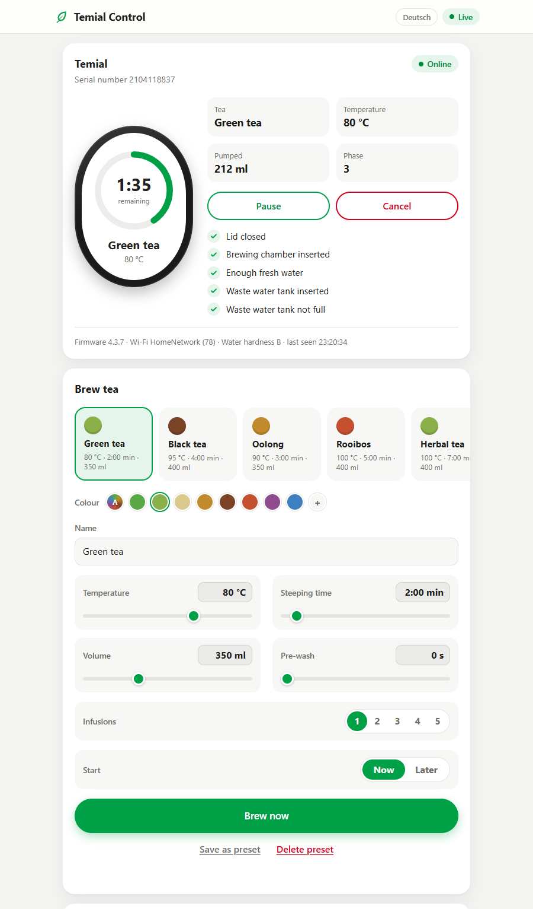
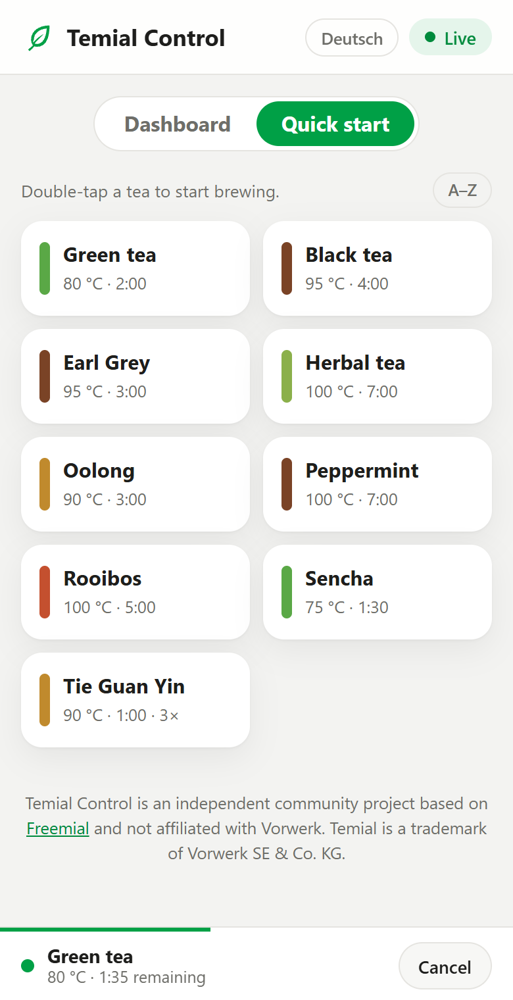

Brewing and presets
Temperature, steeping time, volume and pre-wash. Presets with custom colours.
For the Vorwerk Temial
Vorwerk shut down the Temial cloud in July 2025. Temial Control replaces it on your own network, with a web dashboard, an Android app and a Home Assistant integration.


Brewing, monitoring and device setup without the Vorwerk cloud.
Temperature, steeping time, volume and pre-wash. Presets with custom colours.
Up to five infusions of the same leaves, each with its own temperature and time.
Scheduled brewing. The Temial starts on its own, even when the server is offline.
All presets as tiles, sorted by usage. Double-tap to brew.
Pause, resume and cancel a running brew.
Cups per day and week, litres and favourite teas. Includes brews started on the device.
Connect new Temials to your Wi-Fi from the dashboard or the Android app.
Android notifications when the tea is ready or a tank needs attention.
REST API, server-sent events and a Home Assistant integration.
Light and dark theme, desktop and mobile.
Run the server, connect your Temial, then add the clients you need.
Docker image for amd64 and arm64, for example on a NAS or Raspberry Pi.
curl -O https://raw.githubusercontent.com/megaheroxx/temial-control/main/docker-compose.yml
docker compose up -dDashboard on port 3000. Without Docker: Node.js 22.18 or later, npm install and npm start.
Dashboard as an app, with notifications and device setup from the phone. Android 8 or later, no Google services required.
On first start, enter the server address, for example http://192.168.1.40:3000.
Sensors, a button per preset and brew actions for automations. Configured in the UI, no YAML required.
Install via HACS, then add the integration Temial Control with the server address.
Open in HACSRequired once per device. The Temial then connects directly to your server.
The device connection has no authentication, as with the original cloud. Do not expose the server to the internet.
Set APP_TOKEN to protect the dashboard and the API on your network.
Based on the research of the Freemial project. Brew control follows the original Vorwerk app.